13 场景实战：从零到第一次调用成功的完整示例
本章面向刚部署好网关的开源用户，给出一个完整、可照做的配置示例：创建模型服务商、添加业务集群、签发 API Key，配置路由，最后用 curl 调用成功。主示例跑通后，再按需查看文末的进阶扩展。
13.1 示例目标与全景
前提：
- 已按部署文档完成三个组件的部署：控制台（Web 管理界面）、BFE 数据面（请求转发引擎）、conf-agent（配置同步助手），能正常登录控制台（部署说明见 Web 部署、API 部署）；
- 手头有一个可用的模型服务：自建 OpenAI 兼容服务（vLLM / Xinference / Ollama 等），或公有模型服务商（DeepSeek / OpenAI / Qwen 等）。
配置完成后的请求链路：
客户端 curl -H "Authorization: <API Key>" POST /v1/chat/completions
│
▼
BFE 数据面 ─ ① 模型访问控制(不通过 403) → ② 限流(触发 429) → ③ 配额扣减(不足拒绝)
│
│ 路由表 apikey（该 Key 专属）：规则命中 → 目标 = demo-cluster + 模型
▼
业务集群 demo-cluster ── 所属服务商 demo-provider ── 后端 172.19.1.187:13801配置链路总览（本章按顺序执行）：
| 步骤 | 动作 | 入口 |
|---|---|---|
| 1 | 创建模型服务商（实例池 + 模型 + Keys） | 资源管理 → 模型服务商 |
| 2 | 添加业务集群（引用服务商） | 资源管理 → AI业务集群 |
| 3 | 创建 Entity 类型与组织（可选） | 消费者管理 → Entity管理 |
| 4 | 签发 API Key（调用凭证） | 消费者管理 → API Key 管理 |
| 5 | 配置 API-Key 路由规则（集群 + 模型） | 路由管理 → 路由表 → 该 Key 的 apikey 表 |
| 6 | curl 调用验证 | 终端 |
示例取值表（替换成你自己的环境即可）：
| 配置项 | 示例值 |
|---|---|
| 后端地址 | 172.19.1.187，端口 13801 |
| 服务商名称 | demo-provider |
| 集群名称 | demo-cluster |
| 协议 | https |
| 模型协议 | openai |
| 模型名 | doubao-pro-32k |
| Entity 类型 / 组织 | team（级别 3）/ dev-team |
| 路由表达式 | req_path_prefix_in("/", false) |
13.2 步骤 1：创建模型服务商
资源管理 → 模型服务商 → 「添加服务商」：
| 分区 | 示例值 |
|---|---|
| 名称 | demo-provider |
| 描述 | 演示用服务商 |
| 实例池（IP 模式） | IP 172.19.1.187、端口 13801、权重 100 |
| 模型协议 | openai |
| 模型列表接口 | 协议 https；路径 /v1/models（地址来自实例池，只读） |
| 服务鉴权 Keys | 若后端需要鉴权则填写 Key 名称与 Key 值 |
| 模型列表 | 点「获取」后选择 doubao-pro-32k（以实际拉取结果为准） |
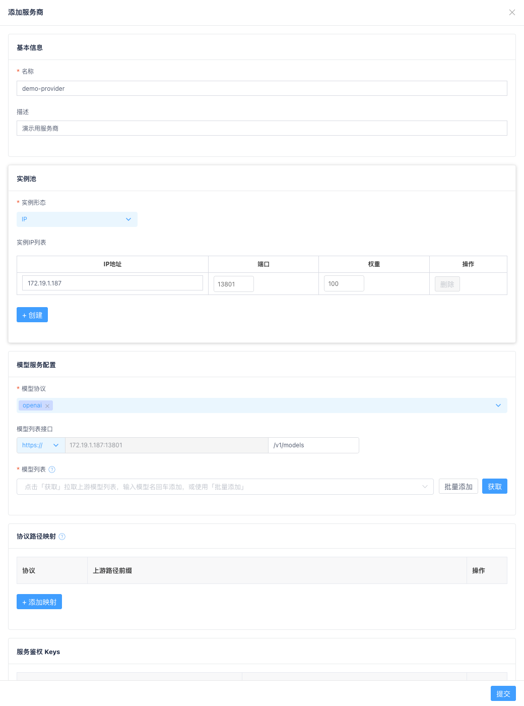
点「提交」保存。列表出现 demo-provider 即成功。
协议怎么选：自建 vLLM / Ollama 等 OpenAI 兼容服务选
openai；对接 Claude 官方 API 选anthropic；聚合平台可同时勾选多种协议（见 03 章）。
常见坑：点「获取」失败——检查 IP / 端口 / Key 是否正确，以及网关能否访问该后端。
13.3 步骤 2：添加业务集群
资源管理 → AI业务集群 → 「添加集群」，向导共 5 步：
第 1 步 基础配置
| 字段 | 示例值 |
|---|---|
| 集群名称 | demo-cluster |
| 协议 | https |
| 会话保持 | 停用（需要时见进阶 B） |
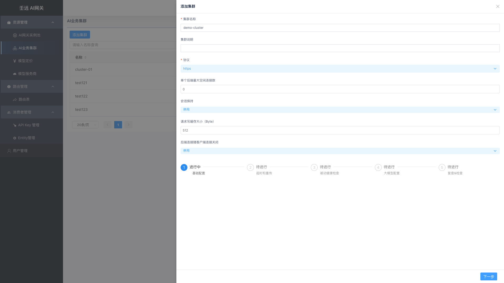
第 2 步 超时和重传：保持推荐默认值即可（见 4.4 节）；服务商首包耗时长时可放宽「读后端响应头部超时」。
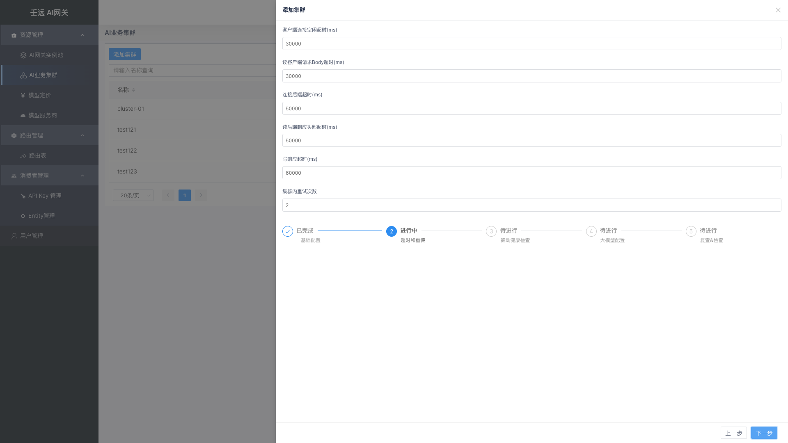
第 3 步 被动健康检查：保持默认；「健康检查期望的状态码」填 0 表示忽略状态码、有响应即健康。Host 留空时将使用所属服务商首个实例地址。
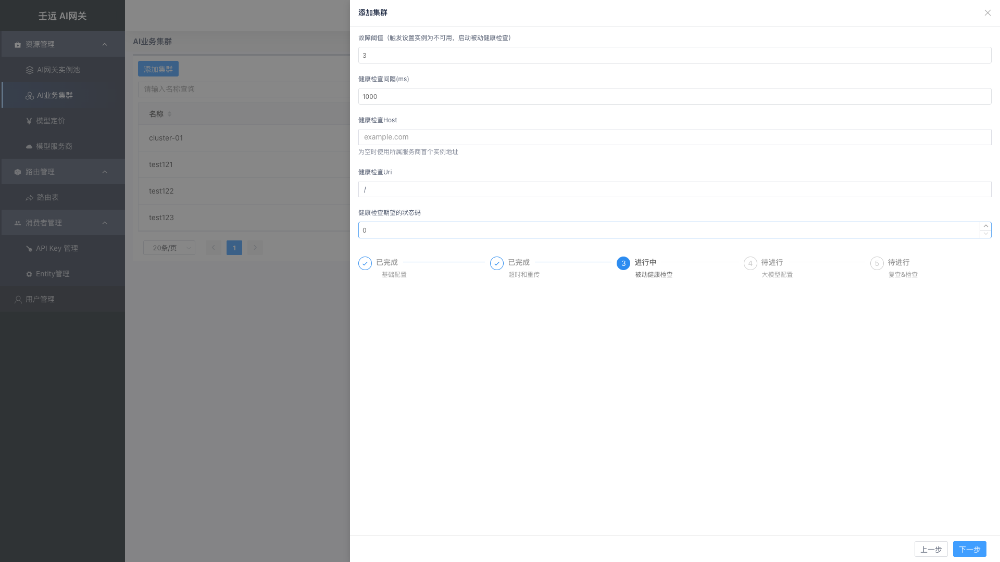
第 4 步 大模型配置
| 字段 | 示例值 |
|---|---|
| 所属服务商 | demo-provider |
| 转发模型 | doubao-pro-32k（可多选或全选） |
| 服务鉴权 Keys | 按需从服务商 Key 名称中选择并分配权重（可选） |
负载均衡模式（balance_mode） | 默认 WRR（加权轮询），照做可保持默认；想用 EPP 调度则选 EPP——此时下面的「均衡模式配置」为必填项 |
实例负载画像（load_profile） | 选 EPP 时填 balanced（均衡）；queue-first 偏排队 / kv-first 偏 KV 空闲 |
亲和强度（affinity） | 选 EPP 时填 medium（0.6）；把相同前缀 / 同一会话的请求往同一后端聚 |
EPP 运行时参数（epp_runtime） | 选 EPP 时填：健康检查间隔 2s、调用超时 3s；其余留空，由 BFE 按默认值补齐 |
WRR 与 EPP 的差别：WRR 由 BFE 本地加权轮询选后端，开箱即用；EPP 把选后端的活交给独立的 EPP 调度器，选 EPP 前需要先在 资源管理 → EPP调度 → EPP 调度分配 中完成「EPP 模式集群 ↔ 实例组」的分配（未分配的 EPP 集群会降级为 WRR）。切回 WRR 时 epp_config / epp_runtime 只是保留休眠、不生效，再切回 EPP 继续生效，来回切换不丢配置。字段全集与调优建议见 4.6 节、05 章 EPP 调度。
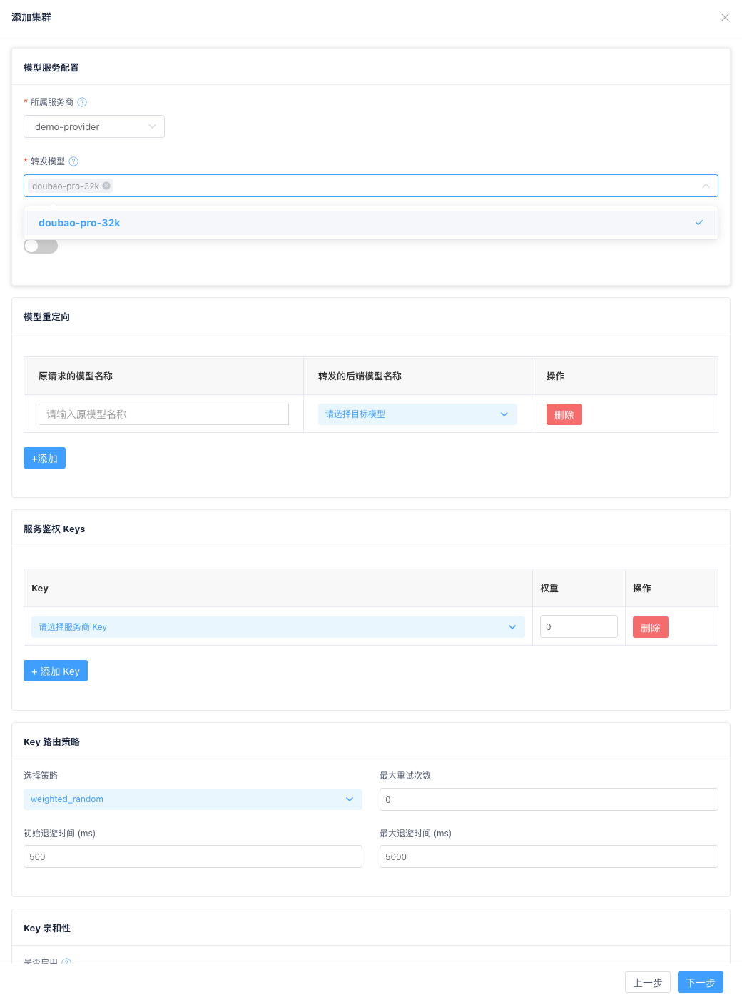
第 5 步 复查&检查：核对汇总信息后点「提交」，集群列表出现 demo-cluster 即添加成功。
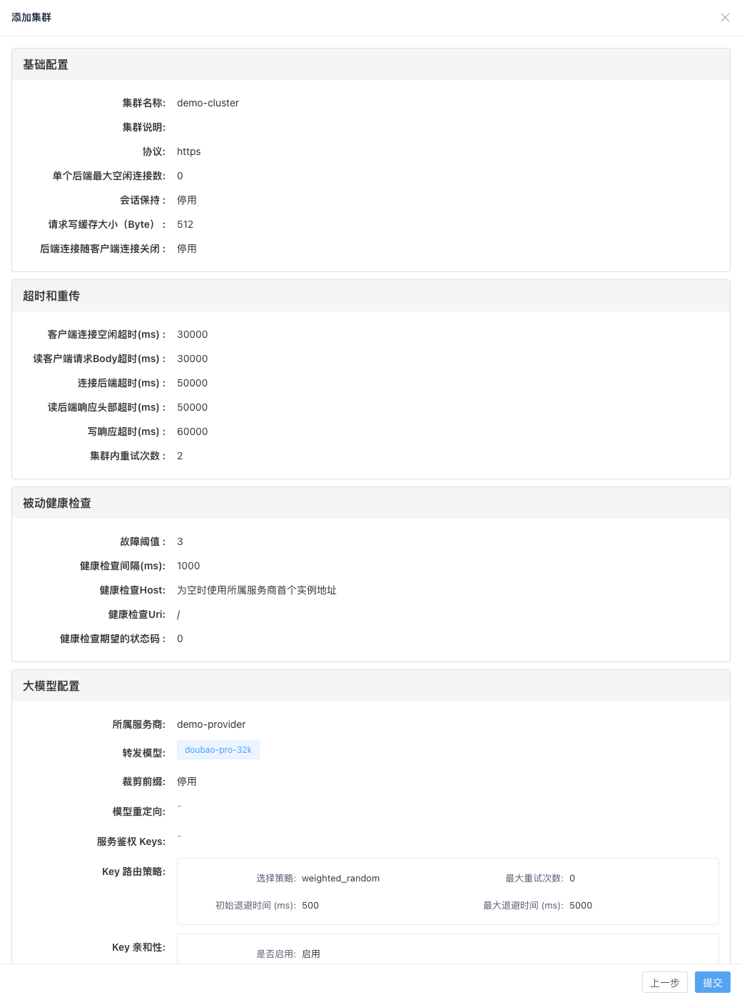
13.4 步骤 3：创建 Entity 类型与组织（可选）
只想快速跑通可以跳过本步，步骤 4 创建不挂载组织的 API Key 即可。但建议完成：组织是配额 / 限流 / 模型访问控制的常用挂载点。
- 消费者管理 → Entity管理 → 类型页签 → 「创建类型」：类型名
team、级别3（见 07 章）。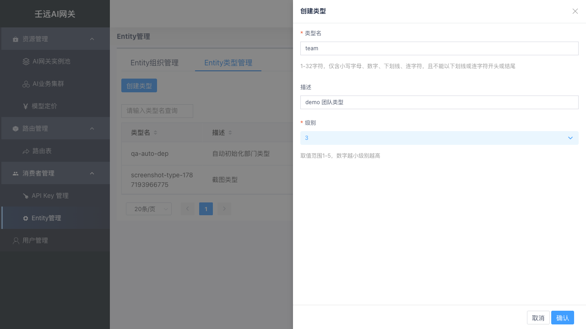
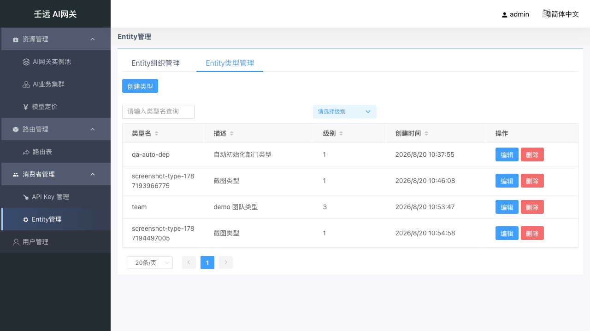
- 组织页签 → 「创建Entity」：名称
dev-team、所属类型team；允许模型保持*即可。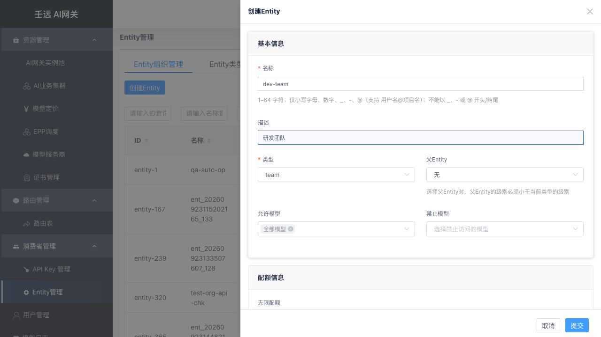
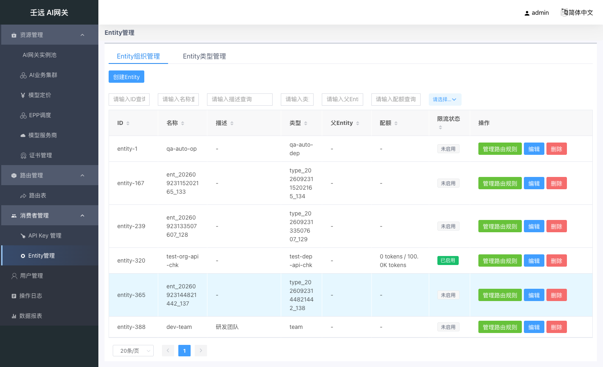
13.5 步骤 4：签发 API Key
消费者管理 → API Key 管理 → 「创建」：
| 字段 | 示例值 |
|---|---|
| 描述 | demo 第一个 Key |
| 过期时间 | 勾选永不过期（或按需指定） |
| 网段 | 默认 * 不限制 |
| 挂载Entity | 完成步骤 3 时填 dev-team；跳过步骤 3 则留空 |
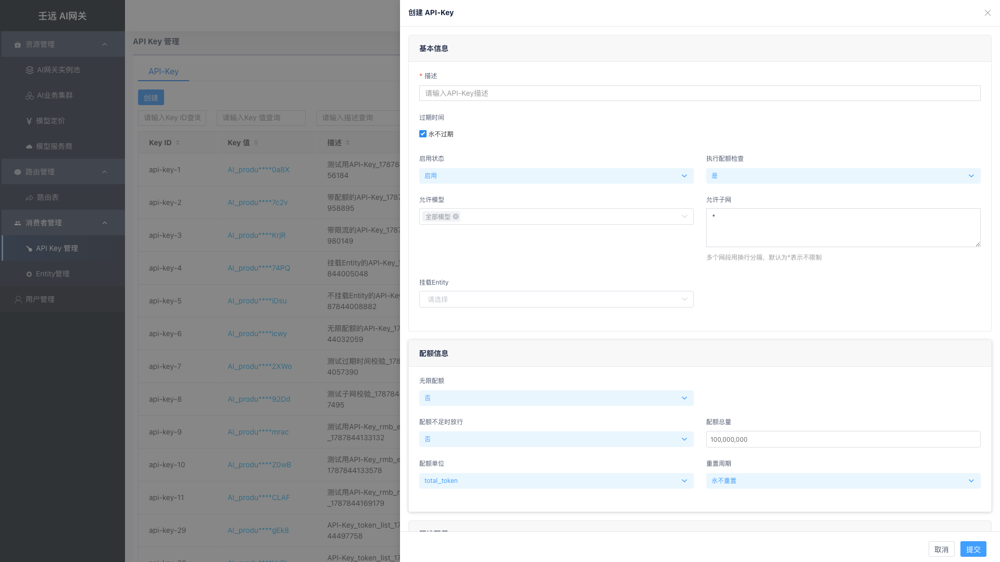
创建成功后点击列表的 Key 值复制保存。
重要提示：请同时记住该 Key 的 Key ID（如
api-key-1）。下一步配置路由时需要用它找到自己的路由表。
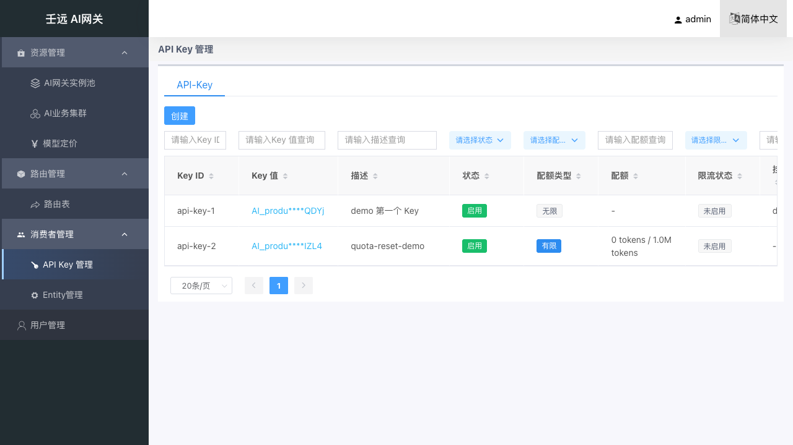
13.6 步骤 5：配置 API-Key 路由规则
路由表优先级：API-Key > Entity > Global（更具体的表优先匹配）。
- 路由管理 → 路由表，找到属主为刚才 Key ID 的行，点击「查看」。
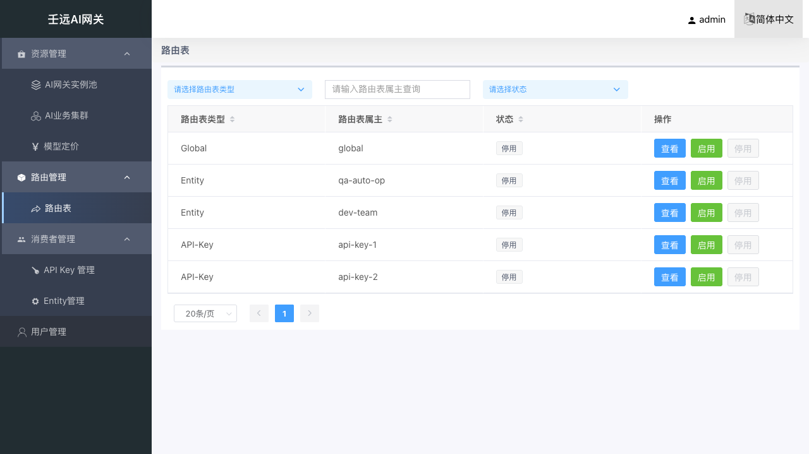
- 「进入编辑模式」→「添加规则」：
- 规则名：
demo-default； - 表达式：
req_path_prefix_in("/", false)（兜底匹配所有请求）； - 目标集群和模型：集群选
demo-cluster，模型选doubao-pro-32k，权重 100。
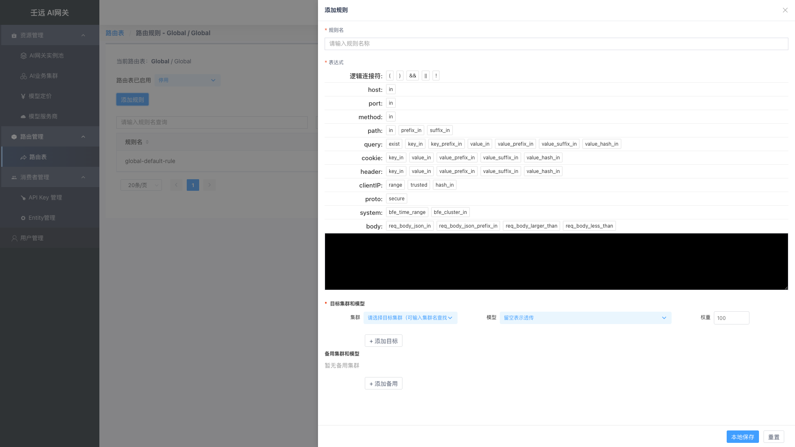
- 规则名：
- 「本地保存」→「提交并生效」。
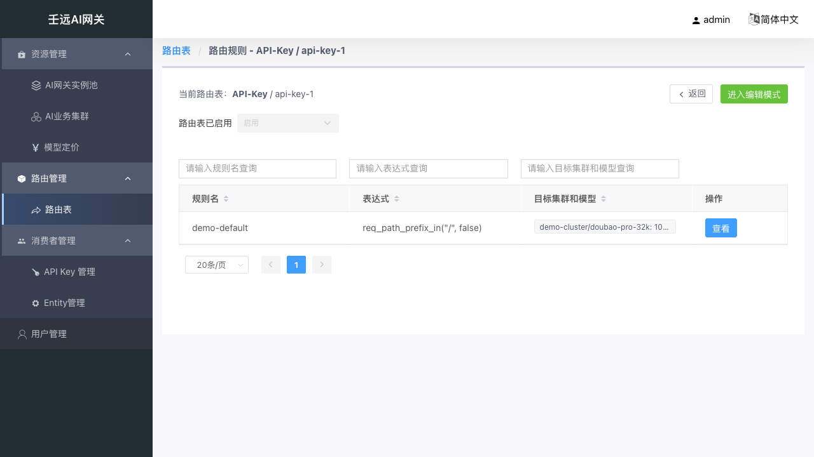
13.7 步骤 6：调用验证
向 BFE 数据面地址发送 OpenAI 兼容请求（地址 = 实例池中登记的 IP:端口）。
curl http://<数据面地址:端口>/v1/chat/completions \
-H "Authorization: <步骤4保存的API Key完整值>" \
-H "Content-Type: application/json" \
-d '{
"model": "doubao-pro-32k",
"messages": [{"role": "user", "content": "你好，介绍一下你自己"}]
}'返回包含 choices 的正常 JSON 即配置完成。
13.8 调用失败排查表
| 现象 | 常见原因 | 处理 |
|---|---|---|
| 401 / 鉴权失败 | Key 填错、过期，或客户端 IP 不在允许网段 | API Key 管理 → 详情核对 |
| 403 | 请求模型不在 Key / 组织允许列表中 | 核对允许模型，机制见 8.5 节 |
| 429 | 触发 TPM / RPM / 并发限流 | 检查限流配置，见进阶 A |
| 配额错误 | 组织或 Key 配额余额不足 | 详情页查看余量，必要时重置配额 |
| 未命中规则 | 表达式不匹配、路由表停用 | 检查该 Key 对应路由表 |
更多错误提示对照见 14 附录。
13.9 进阶扩展（按需）
A. 成本治理：配额 + 限流
编辑组织（或 Key）：配置配额与 TPM / RPM 限流规则。
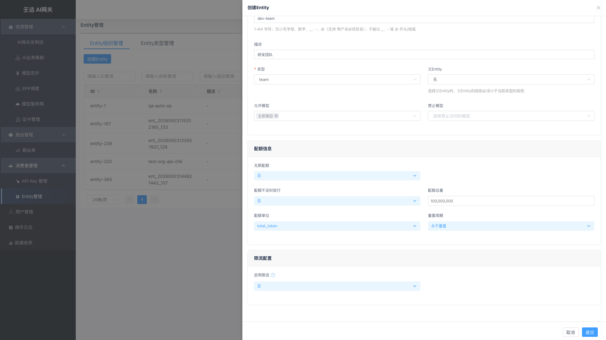
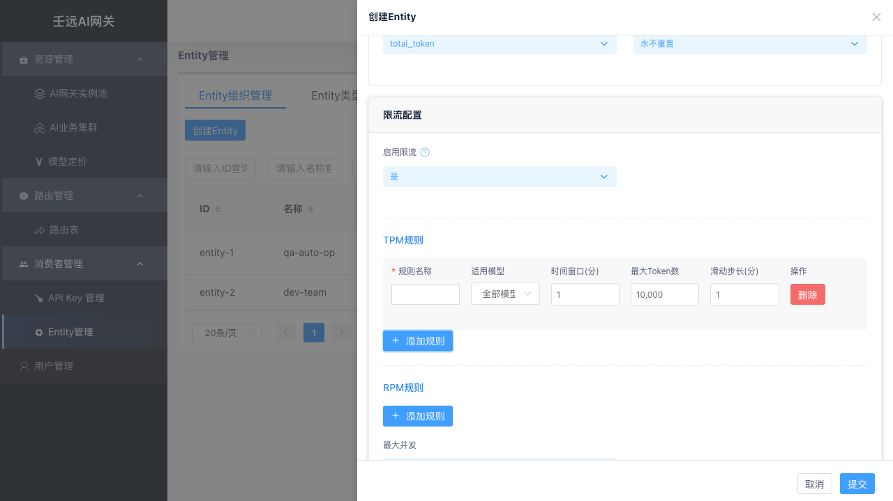
B. 会话保持（哈希策略）
集群基础配置中会话保持 = 启用，再选哈希策略（见 4.3 节）。
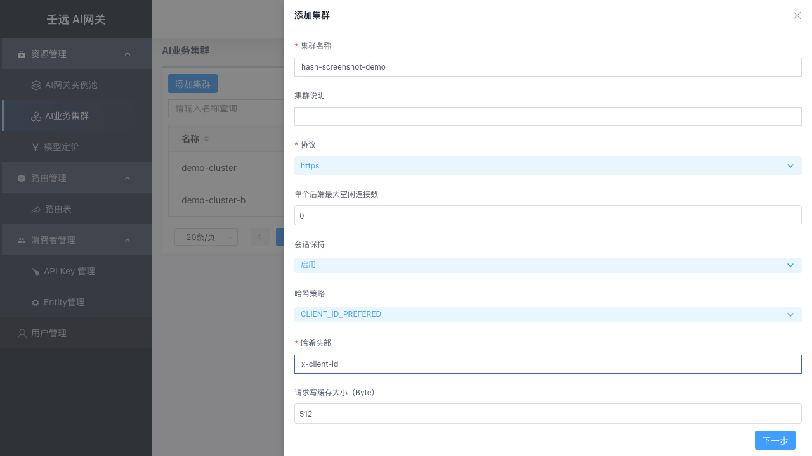
C. 多模型流量分配
路由规则中添加多个目标，权重之和须等于 100。
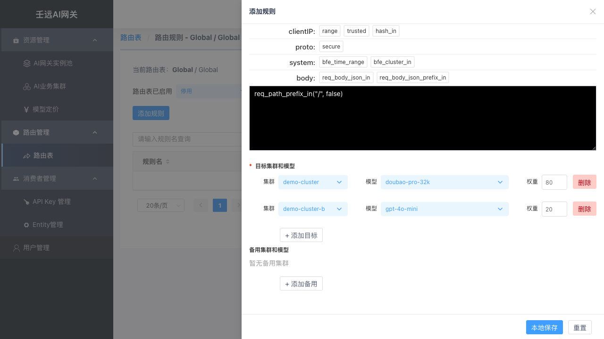
D. 多级组织模型治理
按 company → dep → team 建立组织层级，配置允许 / 禁止模型列表。
E. 分层路由（Global 兜底）
在 Global 表添加默认规则；API-Key 表未命中时回落 Global。
F. 分段计价
在模型服务商列表为 demo-provider 配置「分段计价」，再在模型定价中维护 tier_prices（见 3.9 节、06 章）。
G. 用 EPP 调度提升推理效率
把集群的负载均衡模式从 WRR 换成 EPP（集群向导第 4 步「均衡模式配置」），再在 资源管理 → EPP调度 → EPP 调度分配 里给这个集群分配 EPP 实例组，后端选择就交给 EPP 按实例实时指标（排队长度、KV 缓存利用率、在飞请求数）完成；配合「实例负载画像」「亲和强度」与流控参数调优，可提升前缀缓存复用与整体吞吐。配置项与建议见 05 章 EPP 调度、4.6 节。
H. AI 治理能力速览
除上面的路由与配额之外，网关还提供一组 AI 治理能力，入口按侧栏分组对应六章：「功能增强 → AI缓存规则 / 流量镜像规则 / 意图配置 / AI上下文压缩」、「消费者管理 → 批量任务」、「系统安全 → 密钥收敛」——依次解决应答与语义缓存复用、生产流量双跑镜像、按意图命中路由、长上下文自动压缩、provider 原生批量任务的管控与计费、以及库内敏感密钥的批量重加密收敛。